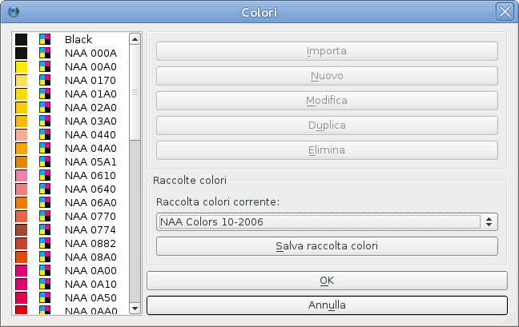

La Newspaper Association of America (NAA) è l'associazione di categoria dei quotidiani e periodici di Stati Uniti e Canada. Organizzazione senza fine di lucro che rappresenta quasi 2000 giornali e le loro attività multipiattaforma, l'associazione si occupa dei principali problemi che interessano il settore della stampa oggi.
Se state creando inserzioni pubblicitarie a colori da pubblicare in un giornale del Nord America, probabilmente vorrete usare la raccolta colori della NAA. Con l'uso dei 51 colori CMYK della NAA all'interno di Scribus, gli inserzionisti potranno creare pubblicità con colori ottimizzati per corrispondere a quelli tipicamente prodotti dalla stampa di inserzioni.
|  |
Le raccolte di colori sono utili soprattutto quando sono accompagnate da un campionario stampato. Per i colori della NAA questo campionario è il “Color Ink Book,” la cui attuale versione è il Vol. 10 (2006). Lo si può acquistare tramite il sito della NAA.
Per editori e stampatori, l'uso di immagini basate sui colori NAA rende più semplice soddisfare i requisiti della SNAP (Specification for Newsprint Advertising Production). Con i colori NAA è possibile ottenere un'alta qualità del colore e corrispondere alle aspettative degli inserzionisti. Il sito SNAP fornisce inoltre dei profili ICC consigliati per i migliori risultati nella stampa di giornali, comprese la correttezza del colore e l'ottimale copertura d'inchiostro.